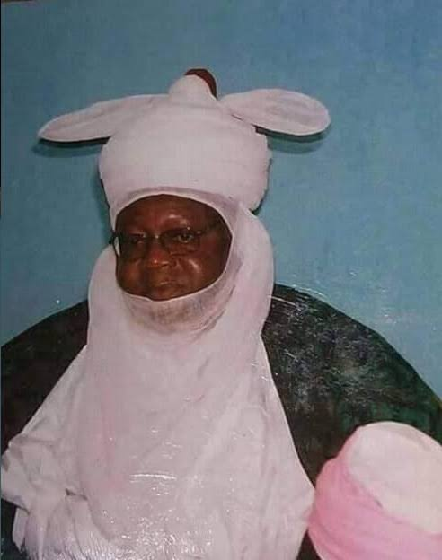

NDAYAKO, HRH Alhaji Umaru Sanda
-
BA, traditional ruler, administrator, born February 19,1937, Bida, Niger State; married, has children; Education: East Elementary School, Bida, 1945-48, Middle School, Ilorin, 1949-50, Government College (now Barewa College), Zaria, 1951-56, Nigerian College of Art, Science
-
Appointed Assistant Secretary, Min istry of Local Government, Kaduna, 1962- 64: Assistant District Officer-in-charge of Tiv Division, 1964; Assistant District Officer, Kano Urban, 1965; Principal Assistant Sec retary. Ministry of Housing, Lagos, 1966-67; Deputy Permanent Secretary (Political Division), Cabinet Office, 1968-74; Chancel lor, University of Ife (now Obafemi Awolowo Univers
-
University of Ife (now Obafemi Awolowo University), Ile-Ife; former member, National Universities Commission; former Chairman, Ahmadu Bello University (ABU) Council; Chairman, Niger State Council of Traditional Rulers; member,National Council of States; Traditional Title: installed the Etsu Nupe, 1975; National Honour: conferred with Commander of the Order of the Federal Republic, 1982; Hobby: gardening